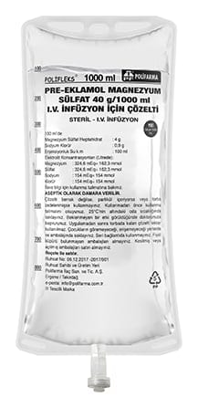

Pre-Eklamol Magnezyum Sülfat 40 g/1000 ml IV İnfüzyon İçin Çözelti

Ne için kullanılır
KT · Bölüm 1PRE-EKLAMOL, her 1000 mL çözeltide 40 g magnezyum sülfat heptahidrat içeren polipropilen torbalarda takdim edilmektedir. Torbalar berrak ve renksiz çözelti içermektedir. Mineral destekleri adlı ilaç grubunda yer alan magnezyum sülfat aşağıdaki durumlarda kullanılır: Gebelikte kan basıncının yükselmesi, ayaklarda ve vücutta fazla su toplanması gibi belirtileri olan pre-eklampside nöbetlerin önlenmesi veya bu durumun ileri bir aşaması olan eklampside (bilinç kaybı, kasılmalar ile başlayıp koma ile sonuçlanabilen gebelik zehirlenmesi) nöbetlerin kontrolünde kullanılır. Bu ürün 4 g IV yükleme dozunu takiben idame tedavisi için üretilmiştir. Gebelik toksemisinde konvülsiyonların önlenmesi için endikedir.
Bu ilacı kullanmaya başlamadan önce bu KULLANMA TALİMATINI dikkatlice okuyunuz, çünkü sizin için önemli bilgiler içermektedir.
• Bu kullanma talimatını saklayınız. Daha sonra tekrar okumaya ihtiyaç duyabilirsiniz. • Eğer ilave sorularınız olursa, lütfen doktorunuza veya eczacınıza danışınız. • Bu ilaç kişisel olarak sizin için reçete edilmiştir, başkalarına vermeyiniz. • Bu ilacın kullanımı sırasında, doktora veya hastaneye gittiğinizde doktorunuza bu ilacı kullandığınızı söyleyiniz. • Bu talimatta yazılanlara aynen uyunuz. İlaç hakkında size önerilen dozun dışında yüksek veya düşük doz kullanmayınız.